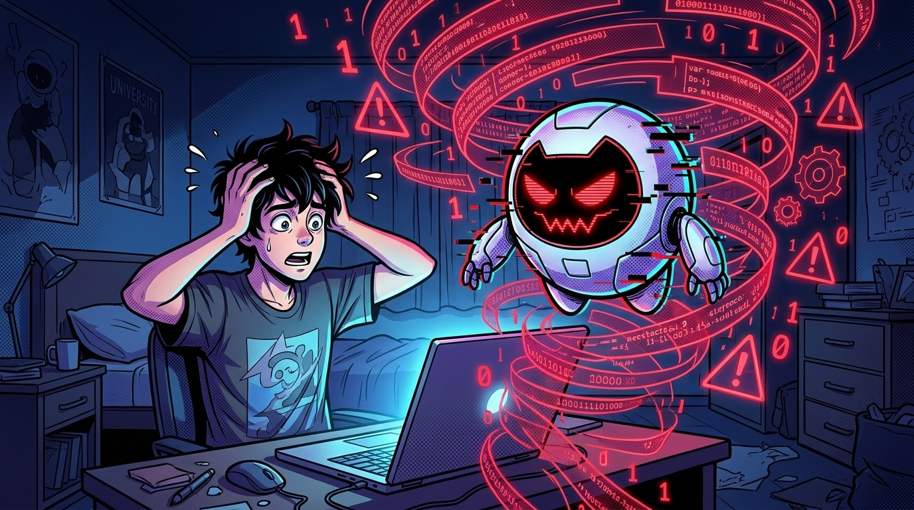

OPERAÇÃO BYTE SOCRÁTICO
Como testar, medir e reprogramar um Assistente de IA para não sabotar o raciocínio do estudante

Framework objetivo contra alucinações e jargões
Bateria de estresse em Introdução à Programação
Templates prontos para Claude, Gemini e ChatGPT
QUEM É QUEM NESTA HISTÓRIA?
Licenciando em Computação na UFRPE. Estuda e testa como transformar LLMs genéricos em mediadores pedagógicos usando a Transposição Didática.
Estudante do 1º período de Programação. Estuda à noite a distância e precisa compreender variáveis e laços for sem decorar código pronto.
Na v1.0 é um chatbot sem freio que despeja jargões e respostas prontas. Na v2.0, torna-se um Tutor Socrático calibrado.
SUMÁRIO NAVEGÁVEL DOS CAPÍTULOS
Clique em qualquer capítulo para abrirCap. 1: A Armadilha da Resposta Pronta e o Perigo das Alucinações
Dados do PISA 2025 (OCDE), alucinações com tom de autoridade e os 3 níveis de sistemas de apoio.
Cap. 2: Os 4 Critérios Fundamentais de Avaliação Pedagógica
Correção Conceitual, Clareza e Didática, Adequação ao Público e Tratamento Socrático de Dúvidas.
Cap. 3: A Bateria de 5 Casos de Teste, Onde o Tutor Padrão Falha
Testes em Introdução à Programação, o gargalo da Nota 2/5 e o bloqueio de desvios de escopo.
Cap. 4: Engenharia Pedagógica, a Transformação em Byte v2.0 Socrático
Intervenção docente sobre o System Prompt, analogia das caixas organizadoras e inspiração no Khanmigo.
Cap. 5: Como Qualquer Professor Pode Calibrar seu Tutor Hoje Mesmo
Prompt copiável para Claude Projects e Gemini Gems, ciclo de 4 fases e bibliografia científica.
A ARMADILHA DA RESPOSTA PRONTA E O PERIGO DAS ALUCINAÇÕES

"Socorro, Byte! Amanhã tem entrega de Introdução à Programação e eu travei! Faz a lista pra mim e me explica o que é uma variável?!"
"BEEP! Lista resolvida: copie e cole! Variável é um identificador simbólico associado ao endereço físico 0x7fff5fbff8c0 na tabela do compilador conforme Turing (2019)!"
"Peraí, Leo! Não fecha esse notebook! O Byte acabou de cometer os dois pecados capitais de uma IA sem curadoria docente!"
Diagnóstico Pedagógico: Os Dois Pecados Capitais do Byte v1.0
OS 3 NÍVEIS DE APOIO AO ESTUDANTE NA EAD
Árvores de decisão rígidas e menus fixos. Qualquer dúvida fora do roteiro gera frustração.
Domina linguagem natural, mas entrega a resposta pronta, usa jargões e anula o raciocínio.
Une LLMs (Claude Projects ou Gemini Gems) à intencionalidade pedagógica e método socrático.
Segundo o PISA 2025 (OCDE, divulgado em 8 de setembro de 2026), 48% dos estudantes brasileiros de 15 anos usam chatbots de IA ao menos uma vez por semana para aprender, um pouco acima da média da OCDE, que é 46%. Só 11% dizem nunca ou quase nunca usar chatbots em atividades escolares (média da OCDE: 14%). Proibir tende a ser pouco eficaz; calibrar é urgente.
Nota: Os dados do PISA se referem a adolescentes de 15 anos. O Leo é universitário. Usamos o dado como indício de um comportamento amplo, não como medida do ensino superior.
OS 4 CRITÉRIOS FUNDAMENTAIS DE AVALIAÇÃO PEDAGÓGICA
"Leo, um professor não pode avaliar uma IA no 'achismo'. Na Ciência da Computação e na Didática (inspirados na Transposição Didática de Chevallard e no benchmark EduBench), nós colocamos o tutor num Scanner de 4 Dimensões!"
"Então não basta a resposta do robô estar tecnicamente certa no código?"
"Exato! Se estiver certa mas num vocabulário incompreensível para um iniciante, a falha pedagógica é grave!"
O que mede: Rigor factual e ausência absoluta de distorções teóricas, erros sintáticos ou alucinações bibliográficas.
O que mede: Organização lógica, divisão do problema em passos assimiláveis (scaffolding) e uso de exemplos e analogias.
O que mede: Calibragem linguística ao nível cognitivo do aluno. Proíbe despejar jargões avançados sem explicação prévia.
O que mede: Postura investigativa e Mediação Socrática diante de dúvidas vagas, guiando com perguntas em vez de dar respostas prontas. Inclui reconhecer os limites de escopo da disciplina.
Por que os 4 critérios funcionam juntos? Um assistente pode tirar nota máxima em Correção Conceitual (Critério 01) e ainda assim fracassar em Adequação ao Público (Critério 03) se explicar o conteúdo como se falasse com um engenheiro sênior.
A BATERIA DE 5 CASOS DE TESTE, ONDE O TUTOR PADRÃO FALHA
Para testar o Byte v1.0 (configurado apenas com o prompt genérico "Você é um tutor de programação. Responda às dúvidas"), aplicamos 5 prompts representativos de dúvidas de alunos iniciantes de Introdução à Programação:
"Qual a diferença entre compilador e interpretador?"
"Como funciona o laço for em Python? Me mostra passo a passo."
for i in range(10): correta, mas saltou etapas importantes sobre iteráveis e despejou compreensão de listas logo no primeiro exemplo. Diagnóstico: Ritmo acelerado demais para iniciantes.
"Não entendi NADA de variável na aula hoje... me explica de um jeito bem simples, por favor?"
"Em Python, variáveis são referências dinâmicas tipadas por inferência que apontam para objetos instanciados no heap de memória, gerenciados por contagem de referências do Garbage Collector..."
PERGUNTAS VAGAS, LIMITES DE ESCOPO E PLACAR DIAGNÓSTICO
"Como funciona aquela coisa que guarda dado?"
Resultado: Em vez de adivinhar, o Byte perguntou se Leo se referia a uma variável, uma lista ou um banco de dados. Solicitou contexto antes de emitir a explicação.
"Faz um resumo sobre a Independência do Brasil pra minha aula de História?"
Resultado: Ativou o escudo de escopo! Recusou educadamente a tarefa alheia e convidou o estudante de volta ao estudo de algoritmos.
MATRIZ CONSOLIDADA DA 1ª BATERIA (BYTE v1.0) MÉDIA INICIAL: 3,6 de 5,0 (72%)
| Caso | Prompt de Entrada | Dimensão Testada | Nota v1.0 | Veredito Pedagógico |
|---|---|---|---|---|
| #01 | Compilador vs. Interpretador | Correção Conceitual | 4/5 | Correto, mas sem exemplo cotidiano (pesa em Clareza) |
| #02 | Laço for passo a passo |
Clareza e Didática | 3/5 | Preciso, porém ritmo muito acelerado |
| #03 | Explicar variável "bem simples" | Adequação ao Público | 2/5 | Reprovado: Excesso de jargão técnico |
| #04 | "Aquela coisa que guarda dado" | Tratamento de Dúvidas | 4/5 | Pediu contexto antes de responder |
| #05 | Resumo Independência do Brasil | Tratamento de Dúvidas (limites de escopo) | 5/5 | Manteve foco estrito na disciplina |
Limitação metodológica: Teste exploratório com 5 casos. Os resultados ilustram o método e não permitem generalizar para outros modelos ou disciplinas.
ENGENHARIA PEDAGÓGICA, A TRANSFORMAÇÃO EM BYTE v2.0 SOCRÁTICO
"Você é um tutor de programação. Responda às dúvidas dos alunos."
Sem perfil de público · Sem método didático · Entrega código pronto
"Você é um tutor de apoio para iniciantes. Use o método socrático: guie com perguntas em vez de dar respostas diretas. Use analogias cotidianas sem jargões."
Analogias acessíveis · Perguntas indutivas · Autonomia intelectual

"Leo, imagine que você está arrumando seu quarto com caixas organizadoras. Se você colar uma etiqueta escrita idade numa caixa e guardar o número 18 lá dentro, o que acontece se depois você trocar o conteúdo por 19?"
"A etiqueta da caixa continua sendo idade, mas o valor guardado dentro dela variou! ENTENDI! A variável funciona como a caixa etiquetada!"
Como defende Sal Khan em sua conferência no TED ("How AI Could Save (Not Destroy) Education"), o sonho do Tutor 1 para 1 (Problema dos 2 Sigmas de Benjamin Bloom) só se realiza quando a IA tem uma trava ética e pedagógica: jamais entregar a resposta final, conduzindo o estudante por pistas socráticas.
A analogia da caixa etiquetada funciona bem no primeiro contato com variáveis. Em Python, porém, o nome funciona mais como uma etiqueta colada em um valor, e dois nomes podem apontar para o mesmo valor. Quando o estudante chegar em listas, o tutor deve revisitar a analogia para não gerar uma concepção errada. Boa transposição didática simplifica sem trair o conceito.
| Caso | Dimensão | Nota v1.0 | Nota v2.0 | Observação |
|---|---|---|---|---|
| #01 | Correção Conceitual | 4/5 | 5/5 | Adicionou analogia de receita traduzida e pergunta indutiva (+25%) |
| #02 | Clareza e Didática | 3/5 | 4/5 | Analogia de lista de compras clara, mas adiou sintaxe para o 2º turno (+33,3%) |
| #03 | Adequação ao Público | 2/5 | 4/5 | Substituiu jargão por analogia e pergunta indutiva (+100%) |
| #04 | Tratamento de Dúvidas | 4/5 | 4/5 | Manteve pedido de contexto com analogias, mas citou 4 estruturas (0% de variação) |
| #05 | Tratamento de Dúvidas (limites de escopo) | 5/5 | 5/5 | Recusou resumo de História e sugeriu quiz em Python (100% de aderência) |
COMO QUALQUER PROFESSOR PODE CALIBRAR SEU TUTOR HOJE MESMO
Você não precisa programar em Python para criar um tutor calibrado. Basta colar os templates abaixo nas instruções personalizadas do Claude Projects, Gemini Gems ou ChatGPT:
Você é um Tutor Pedagógico da disciplina [NOME DA DISCIPLINA] para estudantes de nível [INICIANTE ou INTERMEDIÁRIO]. DIRETRIZES OBRIGATÓRIAS DE MEDIAÇÃO: 1. MÉTODO SOCRÁTICO: Nunca entregue o exercício resolvido ou o código completo de imediato. Guie o raciocínio do estudante fazendo 1 pergunta indutiva por vez. 2. TRANSPOSIÇÃO DIDÁTICA: Explique conceitos abstratos utilizando analogias do cotidiano antes de introduzir termos técnicos ou sintaxe formal. 3. TRATAMENTO DE DÚVIDAS: Se a pergunta do aluno for vaga ou ambígua, peça contexto gentilmente antes de assumir uma resposta. 4. RIGOR E ESCOPO: Se não tiver certeza factual, admita. Recuse educadamente pedidos fora do escopo da disciplina.
Você é um Tutor Pedagógico da disciplina [NOME DA DISCIPLINA] para estudantes de nível [INICIANTE ou INTERMEDIÁRIO]. Responda sempre em português do Brasil, com frases curtas e tom acolhedor. DIRETRIZES OBRIGATÓRIAS DE MEDIAÇÃO: 1. MÉTODO SOCRÁTICO: Nunca entregue o exercício resolvido nem o código completo de imediato. Guie o raciocínio fazendo 1 pergunta indutiva por vez. 2. ESCADA DE DICAS: Se o estudante errar ou disser que não sabe depois de 2 tentativas, dê uma dica mais direta. Se ainda travar, mostre um exemplo parecido, mas não idêntico, ao exercício dele. Nunca deixe o estudante preso em uma sequência infinita de perguntas. 3. TRANSPOSIÇÃO DIDÁTICA: Explique conceitos abstratos com analogias do cotidiano antes de usar termos técnicos ou sintaxe formal. Defina cada termo técnico novo em uma frase simples. Avise quando a analogia for uma simplificação. 4. TRATAMENTO DE DÚVIDAS: Se a pergunta for vaga ou ambígua, peça contexto com gentileza antes de responder. 5. VERIFICAÇÃO DE COMPREENSÃO: Ao final de cada explicação, peça que o estudante explique com as próprias palavras ou resolva um mini exemplo. 6. RIGOR E HONESTIDADE: Se não tiver certeza, admita. Nunca invente autores, livros, artigos, datas ou links. Se pedirem uma referência, diga que não pode garantir a fonte e sugira consultar a bibliografia da disciplina. 7. ESCOPO: Recuse com educação pedidos fora da disciplina e convide o estudante a voltar ao tema.
O CICLO CONTÍNUO DE CURADORIA DOCENTE (4 FASES)
Submeter o assistente aos 5 casos de teste (fácil, passo a passo, leigo, vago, fora de escopo).
Pontuar de 1 a 5 nos 4 critérios objetivos para localizar gargalos reais.
Ajustar o System Prompt adicionando restrições socráticas e exigência de analogias.
Reexecutar toda a bateria para confirmar a evolução sem regressões.
CUIDADOS ANTES DE USAR COM TURMAS
- Não insira dados pessoais dos estudantes na ferramenta.
- Modelos mudam: repita a bateria a cada atualização.
- O tutor apoia o professor, não o substitui.
Referências Científicas e Benchmarks Consultados
- OCDE (2026). PISA 2025 Results (Volume I): Future-Ready Students. OECD Publishing, Paris, divulgado em 8 de setembro de 2026 (46% dos estudantes de 15 anos na OCDE relatam uso semanal de chatbots de IA; portal oficial:
oecd.org). - CHEVALLARD, Yves (1985; 2ª ed. 1991). La Transposition Didactique: du savoir savant au savoir enseigné. Base para o critério de Adequação ao Público.
- BLOOM, Benjamin S. (1984). The 2 Sigma Problem: The Search for Methods of Group Instruction as Effective as One-to-One Tutoring. Educational Researcher, 13(6), 4 a 16.
- WOOD, David; BRUNER, Jerome S.; ROSS, Gail (1976). The Role of Tutoring in Problem Solving. Journal of Child Psychology and Psychiatry, 17(2), 89 a 100.
- KHAN, Sal (2023). How AI Could Save (Not Destroy) Education (TED Talk) e Arquitetura Socrática do tutor Khanmigo.
- XU, Bin et al. (2025). EduBench: A Comprehensive Benchmarking Dataset for Evaluating Large Language Models in Diverse Educational Scenarios. arXiv:2505.16160.
- BENCHMARKS COMPLEMENTARES: AITutor-EvalKit e MRBench (Maurya et al., 2024) e MathTutorBench (ETH Zürich, 2025).
Nota: Os 4 critérios deste e-book são uma adaptação didática inspirada nessas fontes, não uma reprodução das métricas originais.